Introduction
Is the Eighth part of JoJo's Bizarre Adventure. The manga started from May 19 to 2011, to August 19, 2021. Fun fact, this manga won the Grand Prize at the 2013 Japan Media Arts Festival and in 2021, Araki won the Iwate Hometown Special Manga Award for Part 8.
Josuke Higashikata
He is a polite and reserved character with amnesia with sassy behavior and is confused all of the time. He is quite hostile at times and smart.
Plot
This story begins in 2011 and this part follows Josuke Higashikata, a young man who has retrograde amnesia, to uncover his identity in Morioh Town after affected by Tohoku earthquake. As he searches for his identity, Josuke becomes entangled in the Higashikata family's curse, intertwined with a hidden history involving the enigmatic Rock Humans and mystical Rokakaka fruit. This plot is a complex web of intrigue, Stand battles, and uncovering the truth behind Josuke origins.
Major Characters
Josuke Higashikata
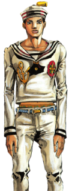Yasuho Hirose
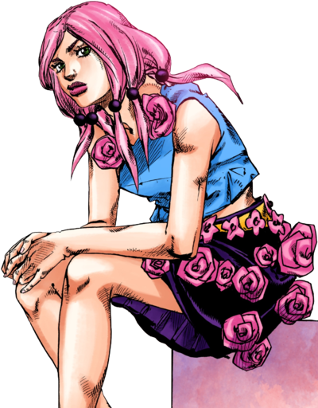Rai Mamezuku
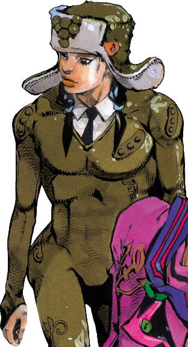Norisuke Higashikata IV
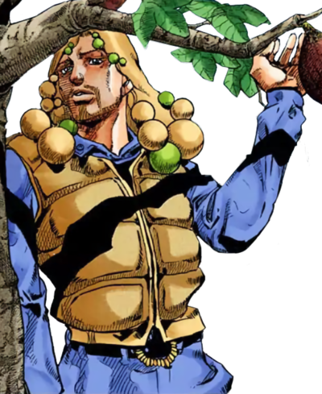Jobin Higashikata
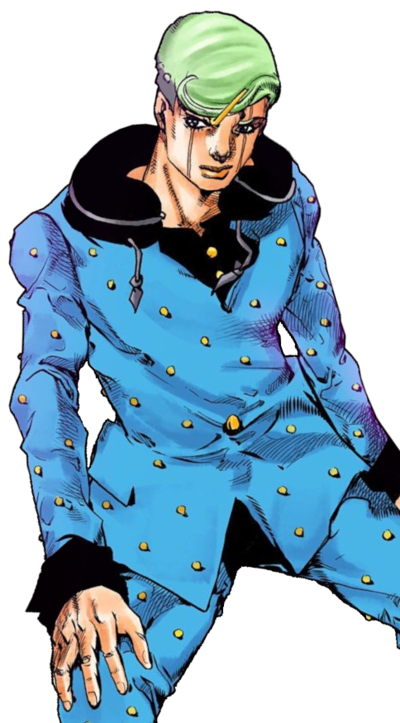Tsurugi Higashikata
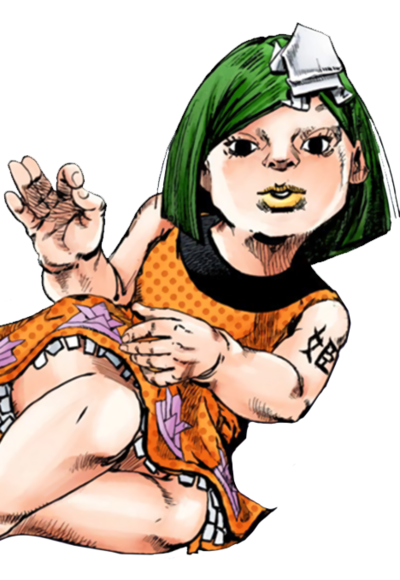Joshu Higashikata
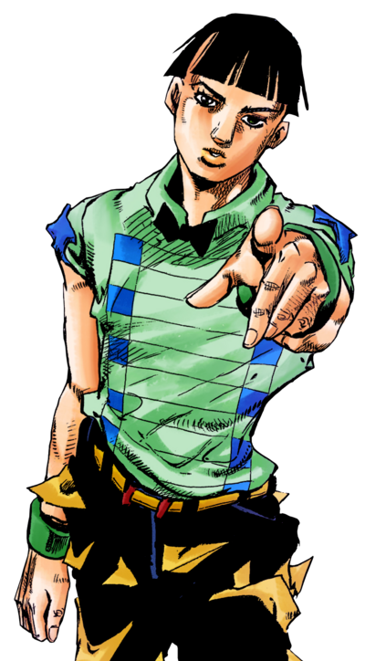Hato Higashikata
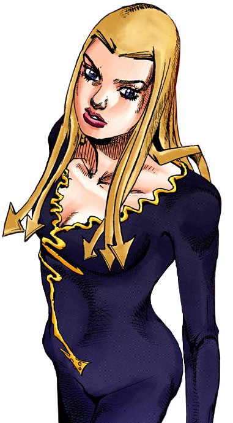Daiya Higashikata
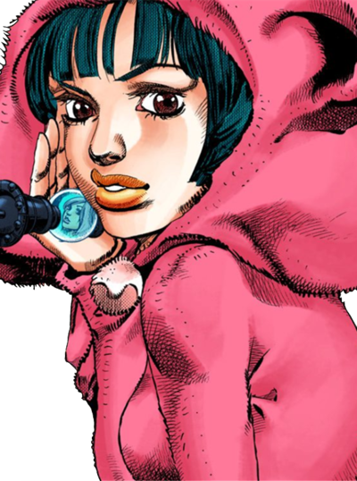Kaato Higashikata
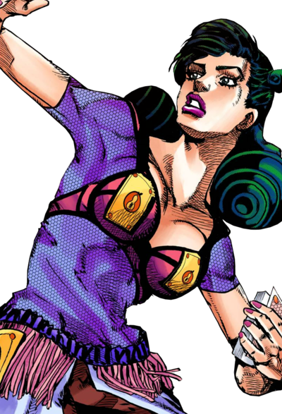Mitsuba Higashikata
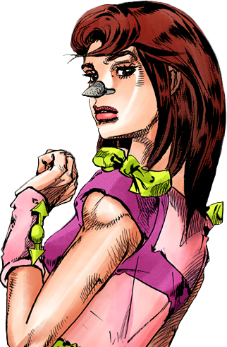Toru (Villian)
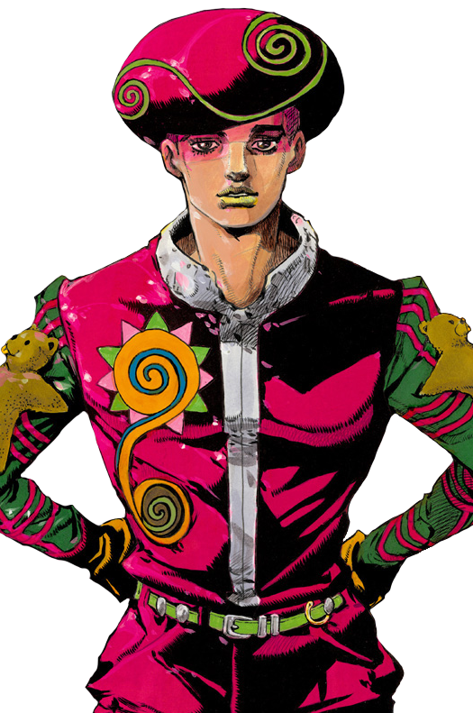References
Ultra Jump 2011 Issue #10 September Issue #10
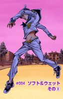Dior Homme Fall/Winter 2007 Ph: Hedi Slimane
Jump Comics JJL Volume 3 (Cover) September 19, 2012
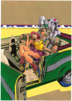John Galliano Campaign Spring/Summer 2012 M: Constance Jablonski & Benjamin Eidem Ph: Karl Lagerfeld
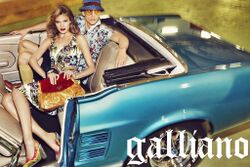